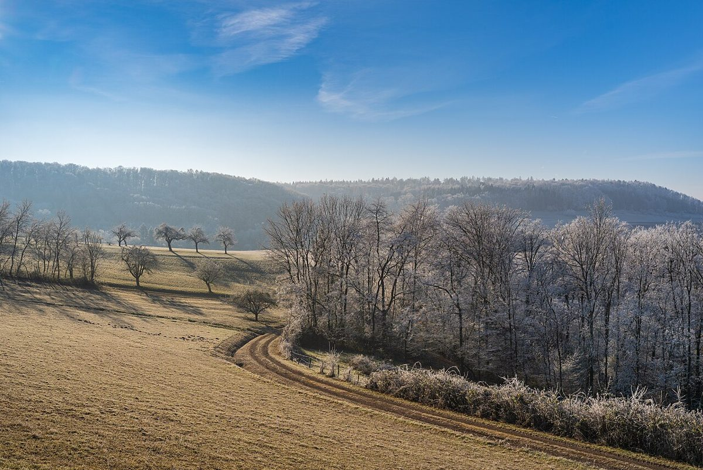

カフェ / 青森県三沢市
白い息の、境目。CaféANNONカフェあんのん
青森県三沢市のカフェ「CaféANNON(カフェあんのん)」のご案内ページです。営業時間やメニューなど、詳しいことは準備中。まずはInstagramをのぞいてみてください。

制作側の連想
息が白くなる、あの境目から
店名の由来は分かりません。制作側は、東北の北のまちと聞いて「吐く息が白くなる朝」を連想しました。そこで、外の冷たさから店のぬくもりへ、気温の目盛りを上がるように読んでもらう作りにしています。左の温度計は、いま何ページ目かを示す飾りです。
この「白い息の境目」というテーマは、制作側が屋号・業種・土地の名前から連想した読み物です。お店の理念や店名の由来とは無関係で、お店の実際の様子やメニューを示すものでもありません。
気温の目盛り(イメージ)
-5℃から、18℃まで。
写真は三沢市の風景ではありません。気温のイメージで選んだ、国外・撮影地不明のフリー素材です。
- -5℃

霜の枝(国外・撮影地不明のイメージ) 霧の朝、枝の先まで白い。
- 0℃

雪の庭(国外・撮影地不明のイメージ) 窓の向こうは雪の景色。
- 6℃

霜の朝の丘(国外・撮影地不明のイメージ) 晴れた霜の朝、吐く息がうっすら見える。
- 12℃

立ちのぼる湯気(国外・撮影地不明のイメージ) 湯気が、息と同じ白さで立ちのぼる。
- 18℃

窓辺のマグ(国外・撮影地不明のイメージ) 窓辺の一杯で、息はもう白くない。
ご案内
お店のこと(確認できたものだけ)
| 所在地 | 〒033-0011 青森県三沢市幸町1丁目8-1 |
|---|---|
| 電話 | なし |
| 営業時間 | 準備中 |
| 定休日 | 準備中 |
| ご予約 | 準備中 |
| 駐車場 | 準備中 |
| SNS | Instagram @cafe.annon |